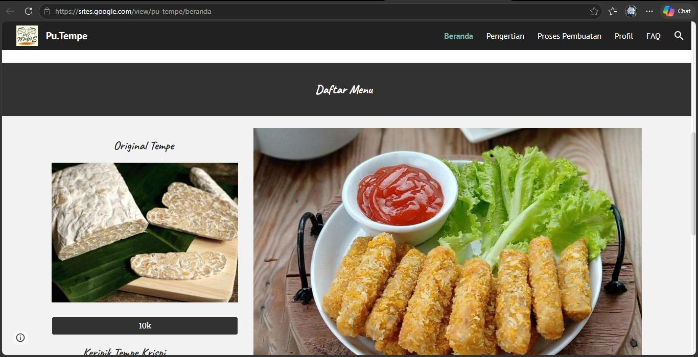
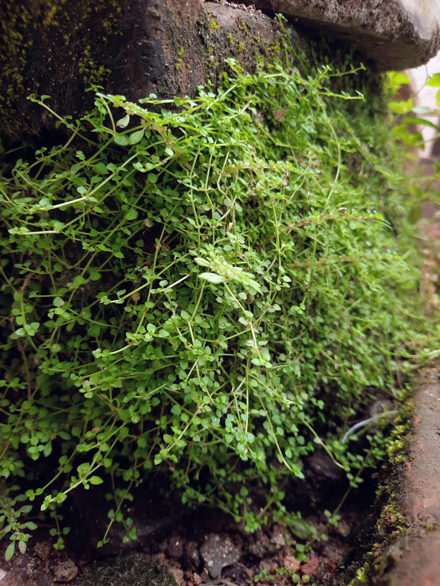
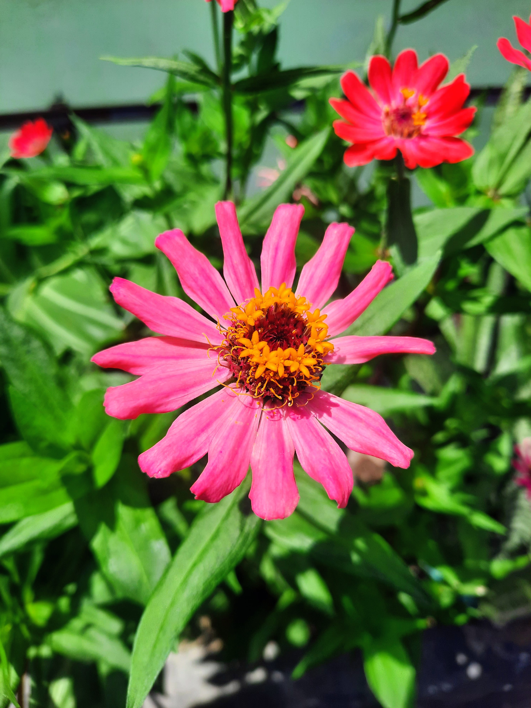

About Me
"Halo! Saya Dziki Okta Surya Ramadhani, seorang profesional yang berfokus di bidang Multimedia. Berbekal minat besar pada seni visual dan penyampaian pesan melalui media, saya memiliki passion khusus dalam fotografi dan videografi. Saya percaya bahwa setiap karya visual memiliki cerita uniknya sendiri. Saya selalu antusias mengeksplorasi berbagai ide kreatif untuk menghasilkan produk multimedia yang berkualitas, estetis, dan berdampak."
My Skills
Project

Desain Web: PU Tempe
Website 'PU Tempe' ini adalah projek desain web yang saya kerjakan sebagai tugas saat SMA menggunakan platform Google Sites. Projek ini melatih kemampuan saya dalam menyusun tata letak (layout) halaman.
Tools: [goole site, Coreldraw]
Kunjungi Website
Fotografi Makro
Eksplorasi Tekstur Alam. Mengambil bidikan dekat dari tanaman penutup tanah Soleirolia soleirolii yang tumbuh padat. Gambar menonjolkan kontras antara kelembutan daun hijau kecil dan kekasaran permukaan batu.
Tools: [Adobe Lightroom]

Studi Warna & Fokus
Bunga Zinnia tunggal berwarna pink cerah. Menggunakan aperture lebar untuk menciptakan bokeh latar belakang yang lembut, menonjolkan detail tajam dari kelopak di bawah cahaya matahari langsung.
Tools: [Adobe Lightroom]
Kecerdasan Bisnis: Pinjol
Analisis mengenai dampak dan aspek kecerdasan bisnis pada layanan pinjaman online (pinjol). Projek ini mengeksplorasi manajemen risiko dan pola perilaku data pengguna.
Tools: [Capcut]

Desain Grafis / Dokumentasi
Bagian ini menampilkan karya desain grafis atau dokumentasi tambahan hasil dari pembelajaran dan praktik multimedia yang telah diselesaikan.
Tools: [Adobe photoshop]